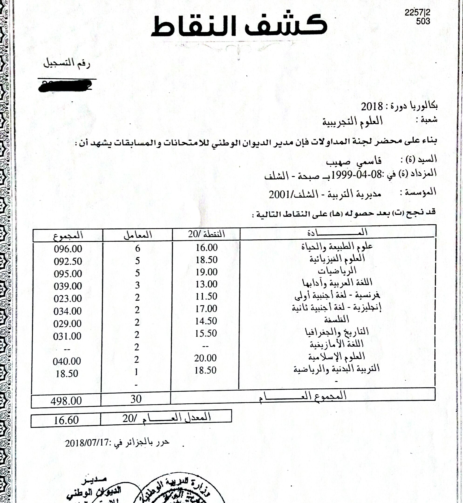

مقال صهيب قاسمي
كنت طالب ذو مستوى متوسط في الطور المتوسط و الثانوي و معدلاتي السنوية تترواح بين 9 و 12 و تحصلت على بكالوريا بمعدل 11.44 الذي هو حقا معدلي لأنه هكذا كان مستواي ، اختريت تخصص رياضيات و إعلام آلي بولايتي ؛
في الحقيقة لم أكن راضيا أبدا بهذا المعدل أو بتخصصي لاسيما لاحضت زملائي السابقين تخصصوا فيما يرغبون ، فعزمت على أن أفعل فعلا مميزا ، اكتشفت أن المترشحين الأحرار كانوا يتميزون بمعدلاتهم و بعدها قررت حينها أن أعيد البكالوريا مرة أخرى ، أصبحت لدي رغبة مشتعلة في أن أتحصل عللى معدل مميز في البكالوريا ، واجهت بعض العراقيل في البداية مثل لم أجد عملا في صيف تلك السنة فقررت أن أتخلى عن هاتفي مقابل بعض المال ، لكن الحمدلله و جدت من ساعدني ، و بعض الإشاعات أن المترشحين الأحرا ليس من نصيبهم التميز ، العراقيل طبعا ستكون دوما في طريقك
كانت بدايتي في شهر بتمبر متواضعة بوتيرة جد خفيفة ، لم أكن أدرس كثيرا في تلك الفترة ، كنت أبحث عن ما يساعدني من أفكار و نصائح و الأخطاء التي يقع فيها المترشحون الأحرار حتى أتجنبها ، قررت أيضا عدم الذهاب الى جامعتي منها لكي أتفرغ للبكالوريا قتم اقصائي لأني لم أرغب الدراسة هناك ؛ بدأت الدراسة بالمواد التي أحببتها حتى تعطيني دفعا ، و حرصت على أن أدرس كل شيئ ؛
في تلك سنة كان روتيني بسيطا جدا كنت أنظم يومي في 5 دقائق و أستثمر يوما كاملا لم أكن أمارس كثير من هواياتي سوى العدو من حين الى حين ؛ أتذكر في تلك السنة تفاديت الحديث عن البكالوريا حتى لا يصدمني أحدهم بكلمات و تُفقدني البعض من معنوياتي ؛ يوما بعد يوم أصبحت أدرس الكثير من الساعات ، الى أن قدِم الشهر الأخير من البكالوريا فرفعت من وتيرتي ، الشهر الأخير جد مهم و لايجب التكاسل فيه لأنه وقت مراجعة دروس السابقة لأنك لن تتذكر ما درست في شهر سبتمبر ، كما يجب أن ترتاح في الأسبوع الأخير حتى لا تضغط نفسك ، الحمدلله اجتزت البكالوريا و كانت تجربة جميلة تعرفت فيها عن الأصدقاء ( أصدقاء الصدفة ) و كان أسبوعا حيويا؛
في يوم إعلان نتائج البكالوريا ، يومها كان مليئا بالمشاعر المختلطة الضغط ،الحماس ، الفضول كان يوما مميزا ؛ عند ظهور النتائج تحصلت على معدل 16.60 الذي هو أعلى معدل تحصلت عليه في حياتي و بتوفيق من عند الله عز وجل و الذي كان كافيا لارضائي و قيادتي الى تخصصي المرجو؛
تخصصي الآن هو : المدرسة الوطنية العليا للإعلام الآلي بسيدي بلعباس؛

في الحقيقة البكالوريا لن يصبح سهل أنت تصبح أفضل و أكثر معرفة و حكمة ، الأشياء حولك لن تتغير أنت من تتغير لذا ركز على نفسك و تعلم ؛